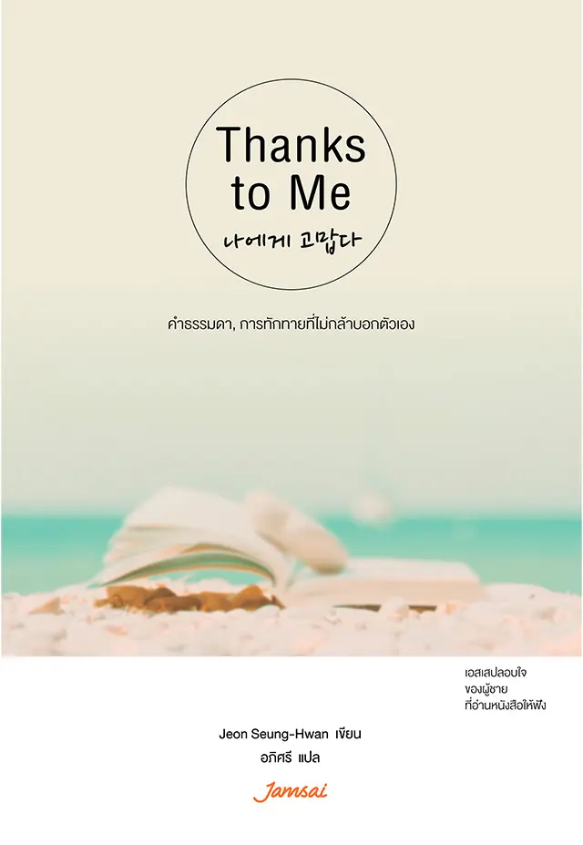

หนังสือ THANKS TO ME เป็นหนังสือแนวฮีลใจและพัฒนาตนเองที่นำเสนอข้อคิดเกี่ยวกับการรักตัวเองและการเห็นคุณค่าในตัวเองช่วยให้ผู้อ่านเรียนรู้การให้กำลังใจตัวเองในวันที่เหนื่อยล้าหรือท้อแท้ พร้อมชวนให้หันกลับมาใส่ใจความรู้สึกของตัวเองและยอมรับในสิ่งที่ตนเองเป็นมากขึ้น

หนังสือเล่มนี้ทำให้ได้เรียนรู้ที่จะเห็นคุณค่าและขอบคุณตัวเองมากขึ้น เข้าใจว่าการใช้ชีวิตไม่จำเป็นต้องสมบูรณ์แบบ และเราสามารถยอมรับทั้งข้อดีและข้อผิดพลาดของตัวเองได้ นอกจากนี้ยังทำให้รู้จักดูแลความรู้สึกและให้กำลังใจตัวเอง ในวันที่เหนื่อยหรือผิดหวัง
ชวนให้ผู้อ่านเห็นคุณค่าของความพยายามตัวเองแม้จะเป็นเพียงความสำเร็จเล็กๆก็ตาม
เรียนรู้ว่าทุกคนสามารถทำผิดพลาดได้ และนำข้อผิดพลาดมาเป็นบทเรียนเพื่อพัฒนาตัวเอง
หนังสือฮีลใจเล่มนี้ช่วยชวนให้ผู้อ่านมองความผิดหวังเป็นส่วนหนึ่งของการเรียนรู้และเติบโต แทนที่จะโทษตัวเอง
เรียนรู้ที่จะเป็นกำลังใจให้ตัวเองในวันที่เหนื่อยล้า และหันกลับมาใส่ใจความรู้สึกของตัวเองมากขึ้น เช่นเดียวกับข้อคิดที่จินยองอ่านในหนังสือ Thanks to Me